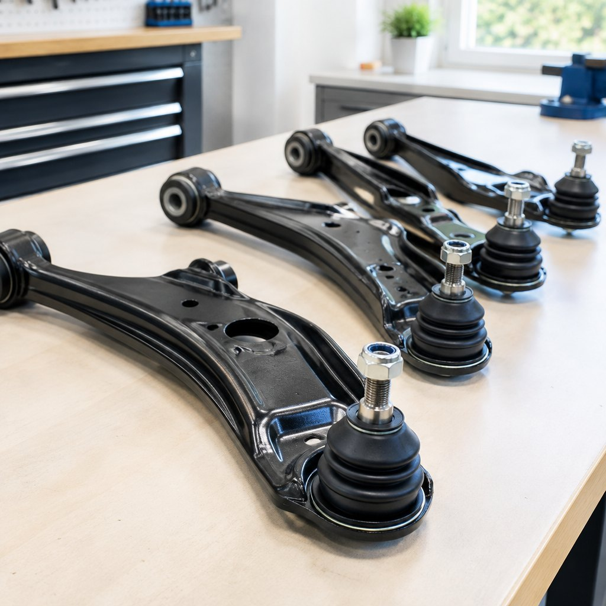

Из чего складывается цена
Мы не пишем «от 50 рублей» и не называем цену вслепую. Стоимость зависит от узла, состояния и объёма: сначала осмотр, потом цифра.
Что входит в стоимость
Платите за работу и расходные части узла — не за бренд и не за логистику новой детали.
Работа по восстановлению
Разбор, замена вкладыша и пыльника, восстановление посадки, сборка и регулировка.
Расходники
Вкладыш, пыльник, смазка, крепёж. По некоторым узлам нужны редкие расходники — скажем заранее.
Снятие и установка
Демонтаж рычага или стойки и установка обратно с проверкой.
Дефектовка
Проверка люфтов и состояния подвески. Если ремонт нецелесообразен — честно скажем.
Почему выходит дешевле
Сравниваем не «мы дешевле всех», а по сути затрат: у восстановления другая структура цены.
Нет ожидания поставки
Не платите за срочную доставку детали и не стоите без машины неделями.
Остаётся ваш металл
Заводской рычаг с правильной геометрией: платите за изношенные части узла, а не за весь узел.
Работа в день обращения
Один визит вместо «оставить машину до прихода детали».
Без лишних замен
Не меняем исправные узлы «заодно»: в счёте только то, что реально требует вмешательства.
Оплата и документы
Работаем с частными клиентами и организациями.
Наличные
Оплата после проверки результата. Стоимость фиксируем до начала работ.
Безналичный расчёт
Для организаций: счёт и закрывающие документы.
Никаких доплат «по факту»
Если в процессе обнаружится что-то ещё, сначала согласуем с вами и только потом делаем.
Про цену
Точная цифра — после осмотра. Но ориентир по типовым работам дадим по телефону.
Зависит от узла и состояния: разборный ли он, цел ли палец, нужна ли замена посадки. Назовите марку и модель — дадим ориентир, точную цену скажем после осмотра.
Потому что «шаровая» у разных машин — разные узлы. У одной модели она меняется в сборе с рычагом, у другой разбирается и восстанавливается.
Есть стоимость дефектовки и работы по разборке узла. Если восстановление невозможно, вы платите только за диагностику.
По комплексу работ (например, обе стороны сразу) обсуждаем индивидуально.
Да, безналично, с документами. Уточните объёмы и количество машин.
Узнайте цену по своей машине
Позвоните: назовите модель и симптом, и мы дадим ориентир до приезда.